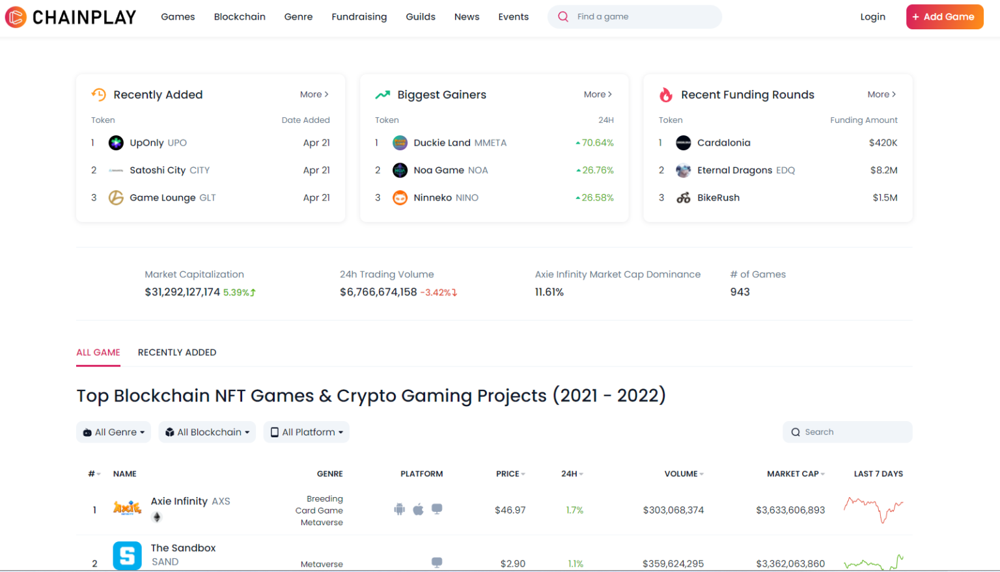
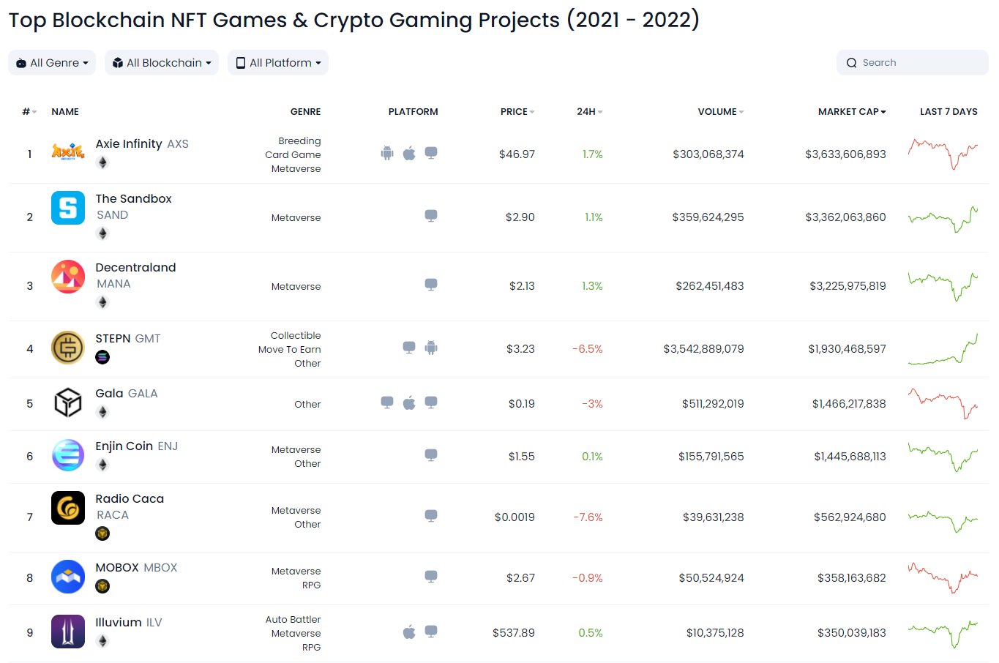
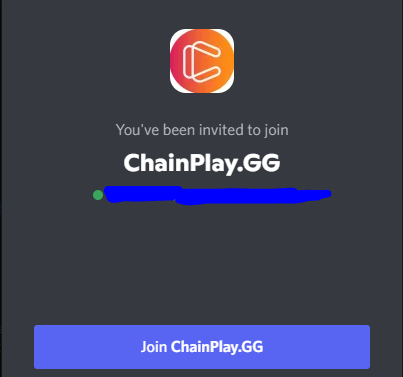
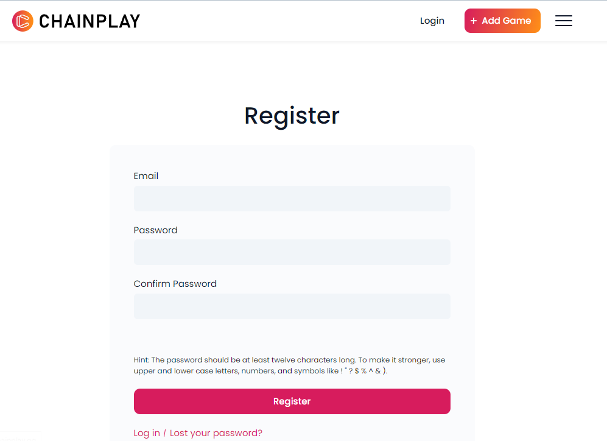

The world of Gaming Finance (GameFi) has continued to evolve ever since the rise of decentralized finance in the gaming scene. GameFI offers video game players an outstanding opportunity to make real-life money from their video gaming exploits.
However, despite the industry’s ever-growing popularity, GameFi lacks several essential resources to make it more beneficial to users. A case in point is the absence of an information aggregation tool for everything happening within the industry. This is where a platform like ChainPlay comes in handy.
ChainPlay is a power hub for blockchain games, and we will give you a detailed breakdown of what ChainPlay is and how to use it wisely.

ChainPlay is a one-stop hub for all-things blockchain gaming. The platform is tailor-made to help crypto gamers get aggregated information from many areas of the GameFi market. Instead of researching each crypto gaming project individually to know its potential, investment opportunities, and events, ChainPlay consolidates and gives users all this information in one platform. This aggregated, real-time information saves you time and ensures you remain ever knowledgeable of the happenings within the play-to earn gaming space.

The crypto gaming scene comes with overwhelming information. There’s always new information on crypto game rankings and fundraising events. Different gaming projects also multiple investment opportunities, guilds, and events to take part in. ChainPlay’s primary focus is to debunk this information and consolidate it on one user-friendly platform.
To do this, the information aggregator portal has many features. Below are some of ChainPlay’s most essential features and what you can use them for.
One of the most important details you need on Blockchain games is their performance. Knowing how well a game is doing can help a player or investor decide whether it is worth their while.
ChainPlay makes it possible for users to see the performance of a blockchain gaming project using the market cap rank feature. With this feature, users can see transaction volumes and token prices in real-time. Market cap rank also comes with a seamless interface design that ensures users get the best experience.
If all you’re looking for is information on which blockchain projects gained or lost the most value during a specific time, you can use the large market movers feature to filter out results.
The feature lists crypto games based on the value their tokens gained or lost. It also has filters that help you observe these values per blockchain, genre, or platform. You can also adjust the feature to show you results for the last 24 hours, a week, or even 30 days.
Knowing how much money a particular gaming project raised and the project’s Return on Investment(ROI) is also significant when selecting a crypto gaming project to be part of. You should avoid older projects with low ROI or few investors because they don’t offer much in terms of profits.
Using the fundraising feature on Chain Play, you can quickly identify fundraising dates, the total amount of funding a project received, and the investors involved. This feature is also handy for investors because it helps them spot current market trends in cash flow for venture capital funds. They can also use it to assess how much capital has been recently pooled into the crypto gaming markets and the average fundraising size of each gaming project.
ChainPlay also assists you to keep tabs on crypto gaming investors. The platform has an investors’ feature that shows the latest information on investors. Among the details you can find are the number of gaming projects the investor has, the ROI of these projects, and which investments have made them the highest ROI.
Besides giving real-time information on crypto games, ChainPlay offers users a deep dive into the past performance of crypto gaming projects listed on the platform. You can obtain summaries on ICOs, IDOs, IEOs, and IGOs in crypto gaming using “Gaming IGO” This feature is what you need to find out all the crucial details about public funding for a particular blockchain game.
For investors who don’t have much money to put into GameFi, ChainPlay’s launchpad feature offers unique investment insights. With aggregated information on all gaming launchpads, you can identify a launchpad’s minimum entry cost, its ATH ROI, and ROI with extreme ease.
Finding a gaming guild that suits one’s needs is getting more complicated over time because of the vast amount of information on crypto gaming. But, ChainPlay has a gaming guild feature that simplifies the research process for you. This feature lists all the critical information you need to settle on a given guild. With this feature, you will find details about the number of communities a guild owns on discord, how many gaming projects it has participated in, and its market cap as well. There are also other key investment details like the guild’s take rate that is indicated to the profit splitting ratio to its scholars.
Many crypto gaming enthusiasts miss out on opportunities because they can’t keep up with all the dates. Chainplay solves the problem by providing its users with an events calendar for all blockchain gaming events.
Users can use this calendar to keep track of all launch dates, token sale schedules, airdrops, and other essential game events that would be beneficial to them.

If you want to connect with other ChainPlay users, you can join the ChainPlay Discord community. This community has 4,299 active members who share their interests in GameFi. ChainPlay’s Discord channel is a fun space to explore blockchain gaming. It will let you in on future airdrop events and update you on ChainPlay partners.
It also allows you to ask questions and get accurate and prompt responses. Alternatively, you can follow ChainPlay on Twitter to get information, but the Discord community is more likely to update you before Twitter.
The sign-up process on ChainPlay is very easy. You just need to click on ChainPlay’s registration link, fill in the email and password fields, and click the Register button. ChainPlay will send you a link to verify your account, and once you do that, you can access all the features the platform has to offer.

If you are a developer and you have designed a new crypto game, you can also add it to ChainPlay to make it easier for interested parties to find information on it. Here’s a simple step-by-step process of adding a new game on ChainPlay.
There are several information aggregators in crypto, like Coinmarketcap, Coingecko, Cryptowatch, and CryptoCompare. But ChainPlay is one of its kind because it exclusively focuses on crypto gaming. This platform is the premier information aggregator for information on blockchain gaming, and it has yet to have a competitor that is as comprehensive as it is in this space.
ChainPlay is a one-stop hub for blockchain gaming information. The portal aggregates a massive amount of information in the Gamefi market. ChainPlay’s data ranges from gaming project funding, launchpads and events. As a ChainPlay user, you get to explore all these using simple features that are suitable for beginners and those who already have a deep understanding of the GameFi market.